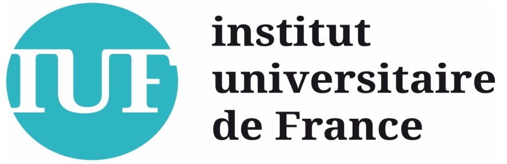
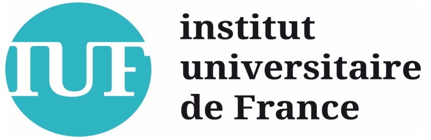
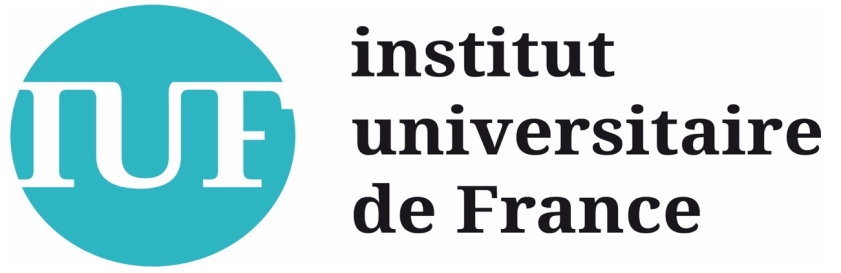
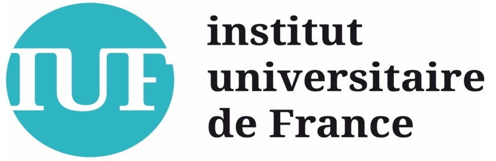

![]()
Citizen science for plant identification: insights from Pl@ntnet
Joseph Salmon
IMAG, Univ Montpellier, CNRS, Montpellier
Institut Universitaire de France (IUF)
 


Citizen science for plant identification: insights from Pl@ntnet
Joseph Salmon
IMAG, Univ Montpellier, CNRS, Montpellier
Institut Universitaire de France (IUF)
 
